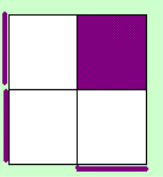
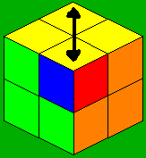
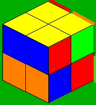
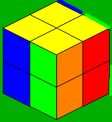
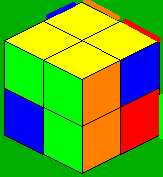

Intro
Guimond method was invented by Gaetan Guimond in the early days of the cube. I've learned this method and adapted a lot of algs for it to be faster. This is one of the fastest methods for solving the corners or, solving a 2x2 cube. Guimond method uses the principal of opposite layers. So you must learn to see Red/Orange, Yellow/White and Blue/Green as one color so for this method you have to be color neutral which is not very hard. The first 2 steps is all about orienting 2 opposite layers of the cube. Then permute both layers at once, which is faster than permuting only one.
Step 1
At this step you need to
have 3 stickers of opposite layers on 1 face. This is already done 90% of the time. Else you have to set
it up with one or 2 moves.
So the D-Layer should
look like this when doing x2 (the purple stickers can be various color, white/yellow, orange/red, or
gree/blue).
When you've got the left
image you'll have a case on the U-Layer of the second table at step 2, when you have the right one,
you'll have on of the first table. Don't look at this, you can recognize the case pure by looking at the
top layer.
Step 2
For this whole method I
will give examples with purple stating the 2 opposite colors as 1.
This is a short step
which can be done in about 4 moves. Put the place of the cubie of the 4th sticker on DLB and the rest on
the D layer. Now you have several cases to get both layers oriented with mixed yellow and white.
For a lot of
cases, the execution is not with the 1 non-oriented sticker on the DLB spot, therefore I first do
something like y2 in my notation. Of course you can do this instantly and don't have to recognize it
from a weird view.
I've made 2 seperate
tables, for there are 2 ways the non-oriented sticker can be oriented. You will quickly notice
similarities between cases of the 1st and the 2nd table.
|
|
|
|
|
|
|
|
|
|
(y2) RU'R' |
(y')R'F'R |
F'L2F |
L2'UL' |
Do x2 and you have case #5 from the 2nd table |
R2F2UF |
F'RU'F2U' |
RF2U'R2FU' |

The second table:
|
|
|
|
|
|
 |
|
|
|
(y)R'UR |
LUL' |
(y2)RU2R' |
(y)L2D'R |
RU'BL' |
F2R2U'R' |
R'FU'F2U |
xUR'U'RU2R |
Step 3
This step is very short
also. Mostly this step can also be done in 4 moves. Here we bring the white/yellow, red/orange,
blue/green cubies to their layer where they belong leavind you with 2 oriented layers. Sometimes it is
possible to see which case you get for this step at preinspection.
The left image shows the
situation of the Upper layer and the right one of the D-Layer (when doing x2)
|
|
|
|
|
R2U2F2 |
R2U2R2' |
R2U'R2U'R2 |
Step 4
This step is pretty easy,
you can learn the first 6 cases (including solved case, but for optimization for this step, learn to do
case 1, 4 and 5 from different angles. I gave 2 algs for other angles but there are 3 more I use.
|
|
 |
|
 |
|
 |
|
 |
|
(RU2R'U')(RU2)(L'UR'U'L') (I do this alg in about 1.25 seconds) |
(F2 U'RU' R'U F2 U R U R') (I do this alg in about 1.7 seconds and is the slowest alg here) |
Already solved! :) |
R2UR2'(U2 + y') R2UR2' (I do this alg in about 1.1 sec. ) |
LD'L F2 L'DL' (1.25 sec) |
R2F2R2(0.6 sec) |
R2UF2U2R2UR2'(1.4 sec.) |
RU'R F2 R'UR'(1.15 sec) |